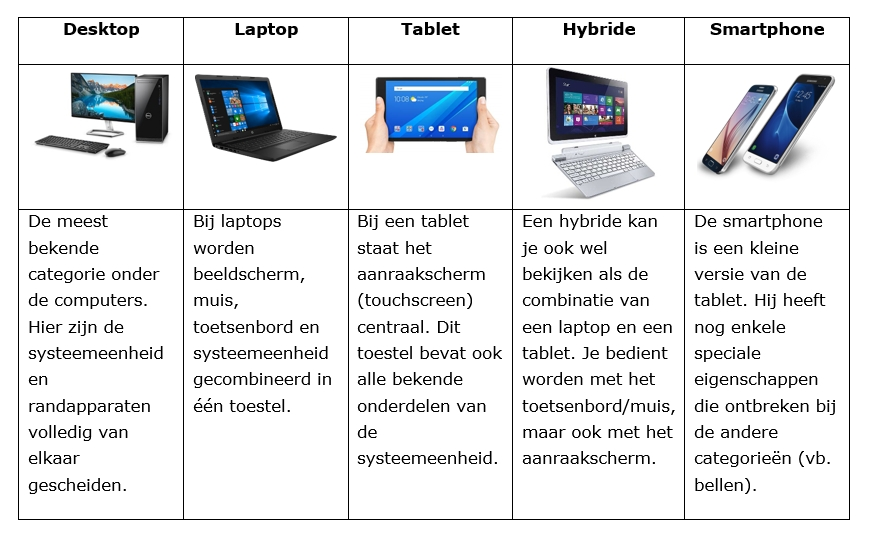

Hier is een kortere en eenvoudigere versie van je tekst, geschreven op een havo-niveau:
Een computer is een apparaat dat gegevens kan verwerken en taken uitvoert zoals tekst bewerken, ontwerpen of herinneringen maken. Computers zijn er in allerlei soorten en maten, van kleine laptops tot grote servers die internetdata opslaan.
Belangrijkste onderdelen van een computer: CPU (processor): Het brein van de computer, die alle taken regelt. RAM (geheugen): Tijdelijke opslag voor gegevens waarmee de computer werkt. Meer RAM betekent meestal een snellere computer. Opslag: Hier worden gegevens permanent bewaard, zoals op een SSD (snel) of HDD (langzamer). Moederbord: Verbindt alle onderdelen met elkaar. Voeding: Levert stroom aan de computer. GPU (videokaart): Zorgt voor de beelden op het scherm, vooral belangrijk voor gamen en video’s. Besturingssysteem (OS): Software zoals Windows, macOS of Linux die alles laat samenwerken.
Soorten computers: Desktop-pc’s: Sterk en geschikt voor op kantoor. Laptops: Draagbaar, maar vaak minder krachtig. Tablets: Handig en compact, maar minder krachtig dan laptops. Servers: Sterke computers voor het beheren van websites en data. Supercomputers: Voor ingewikkelde berekeningen, zoals wetenschappelijk onderzoek.
Wat computers kunnen: Gegevens verwerken: Van simpele rekensommen tot ingewikkelde simulaties. Opslaan: Grote hoeveelheden data bewaren. Communiceren: Informatie delen via internet. Automatiseren: Herhalende taken sneller uitvoeren.
Computers hebben onze samenleving veranderd door hun snelheid en veelzijdigheid. Met nieuwe technologieën zoals AI en quantumcomputers blijven ze zich ontwikkelen.
